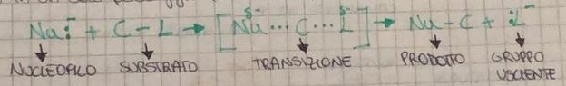
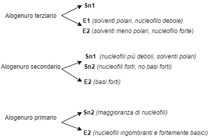

Sostituzione nucleofila
Gli alogenuri alchilici, in particolare cloruri e bromuri sono tra i reagenti più versatili nella
sintesi
organica.
Infatti, tramite le reazioni di sostituzione, gli atomi di alogeni possono essere sostituiti da molti altri
gruppi funzionali.
Un tipico esempio di reazione di sostituzione nucleofila è quello in cui il bromuro di etile reagisce
con lo
ione idrossido per fornire alcool e ione bromuro.
Nel nostro esempio [Cliccare sull'immagine per ingrandire] si spezza il legame Carbonio-Bromo e si forma il
legame Carbonio-Ossigeno.
Lo ione bromuro prende entrambi gli elettroni del legame C-Br e il nucleofilo fornisce gli
elettroni (2) necessari per formare il nuovo legame C-O.
I nucleofili più comuni sono quelli all’ ossigeno, all’azoto, allo zolfo, all’idrogeno e al carbonio.
I meccanismi di sostituzione nucleofila
Esistono due meccanismi che vengono indicati con Sn2 ed Sn1.
“Sn” sta per sostituzione nucleofila, i numeri li vedremo successivamente.
Sn2
È un processo in un solo stadio:

Il nucleofilo attacca il legame C-L e sia il gruppo uscente che il nucleofilo si trovano parzialmente legati
al carbonio.
Man mano che il gruppo uscente si allontana con il suo doppietto elettronico, il nucleofilo, fornisce un
altro doppietto all’atomo di carbonio.
Il numero 2 sta ad indicare che la reazione è bimolecolare, ossia che due molecole (nucleofilo e substrato)
partecipano contemporaneamente al passaggio chiave.
1. La velocità della reazione dipende dalla concentrazione sia del nucleofilo che del substrato.
2. La sostituzione sn2 avviene con inversione di configurazione (da R-2 S-2).
3. La reazione è più veloce se il gruppo alchilico del substrato è primario, mentre più lenta se terziario.
Sn1
È un processo in 2 passaggi:
Nel primo passaggio (lento) coinvolge solo 1 dei 2 reagenti (il substrato).
Qui si spezza il legame tra il carbonio e il gruppo uscente, e il substrato si ionizza.
Gli elettroni del legame C-L rimangono sul gruppo uscente e si forma il carbocatione.
Nel secondo passaggio (veloce) il carbocatione si lega con un nucleofilo per dare il prodotto.
Eliminazione nucleofila
Meccanismo E2
Questa reazione avviene in un unico stadio senza la produzione di composti intermedi.
Quando una base forte reagisce con un alogenuro alchilico con idrogeni posizione beta si ottiene una reazione
di eliminazione che porta alla formazione di un alchene.
Poiché il protone viene perduto dal carbonio in beta posizione rispetto all'alogeno, la reazione viene
detta beta eliminazione.
(Processo inverso dell’addizione di un acido alogenidrico ad un alchene).
La velocità di questa reazione dipende dalla concentrazione sia dell’alogenuro alchilico sia della base.

Meccanismo di eliminazione nucleofila E2
Il meccanismo prevede un unico stadio in cui si ha la rottura concentrata dei legami C-H e C-X e la
contemporanea formazione del doppio legame.
• Base di Lewis accetta i protoni
• Acido si stacca dal carbonio lasciando il doppietto tra i carboni
• Alogeno X porta via un elettrone alla base diventando X⁻
Meccanismo di eliminazione nucleofila E1
È una reazione nella quale la velocità di reazione dipende solo dalla concentrazione del substrato.
La
reazione avviene in 2 stadi :
Primo stadio (lento)
Si ha il distacco del gruppo uscente con formazione di un carbocatione (come per l’S1)
Secondo stadio (veloce)
La base B- rimuove un atomo di idrogeno in beta dal carbocatione per formare un alchene

Alcoli
Sono composti di formula generale R-OH e il gruppo funzionale è quello ossidrilico (-OH).
Nomenclatura
Può avvenire attraverso 2 modi:
1. Inserendo -olo alla fine.
OPPURE
2. Scrivere alcol e -ilico.
Gli alcoli si suddividono in primari, secondari e terziari in base al carbonio che lega il gruppo OH.
Rispetto all’ H, l’OH tende a creare legami con l’ossigeno o con il carbonio più polare con la possibilità
di creare legami ad idrogeno. Ha una leggera acidità e può cedere protoni (H+).
Fenoli
Hanno lo stesso gruppo funzionale -OH ma è legato ad un anello aromatico.
L’OH viene considerato come un sostituente.
I fenoli sono più acidi degli alcoli, infatti per risonanza la carica si sparge per stabilizzare la
molecola stessa.
Gli alcoli e i fenoli sono acidi deboli, infatti il gruppo OH può cedere protoni.
La base che si ionizza prende il nome di ione alcossido (alcoli) o ione fenolo (fenoli).